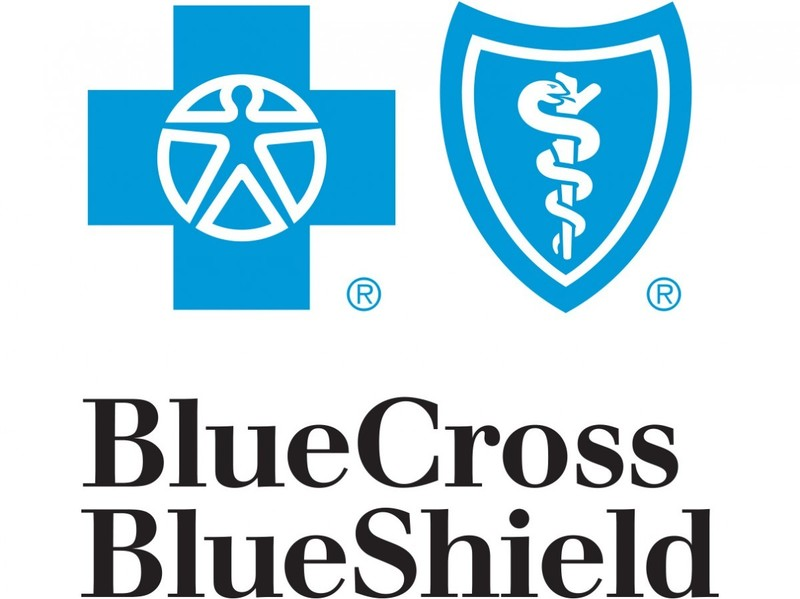
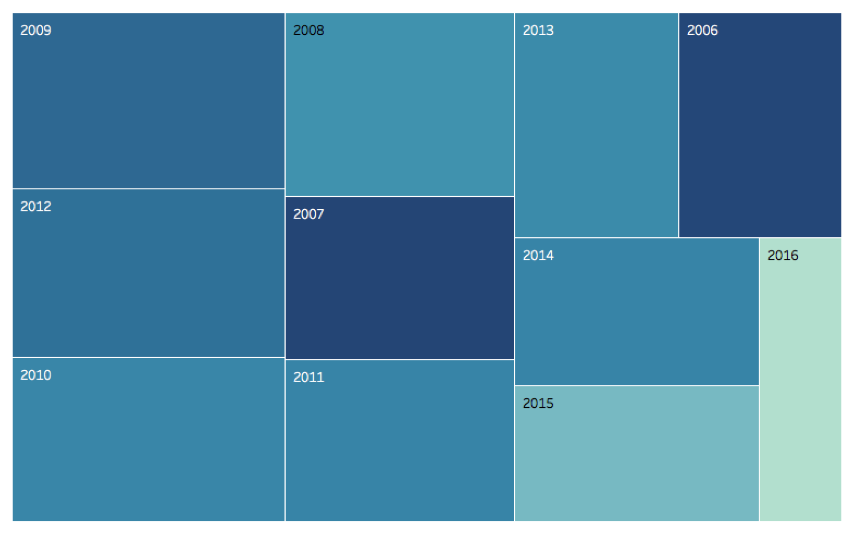

Academic Accomplishments
SI 485 Capstone Project (Winter 2018)
For my SI 485 capstone project, my group was assigned to work with the Michigan Leagues of Academic Games. MLAG is a non-profit organization in Ann Arbor that promotes academic and social growth in a competitive tournament setting. Currently, MLAG processes for tournament registration, scorekeeping, and calculating results are manual and time consuming. Our team developed a web application to automate the aforementioned processes to increase efficiency and accuracy of data collection and analysis at these tournaments. Below is the poster my team presented at the SI Exposition Showcase.
Blue Cross Blue Shield Internship (Summer 2017)

This summer I worked as an IT intern for Blue Cross Blue Shield in Detroit, Michigan (BCBSM) for 12 weeks. My department was responsible for managing information systems for insurance agent sales and underwriting processes. My team's primary roles and responsibilities included working closely with the business to identify existing problems and to develop technical solutions.
The middle picture above is an example of a project I worked on during the summer. I update, simplified, and prettified a landscape diagram for an information system called SMART. The picture to the far right is a picture of my intern group that I worked closely with during the summer.
SI 370 Final Project (Fall 2017)
For my SI 370 Final project, I analyzed IMDB movie data from 2006 to 2016. The dataset included 1,000 of the most popular movies on IMDB during this time period. The dataset included a lot of information about the movie, including title, year, genre, actors, revenue, rating, votes, etc. The bar plot below (on the left) displays the 10 most popular movie genres between 2006 and 2016, with drama being the most popular drama. The plot below (on the right) shows the correlation between movie rating and the amount of revenue the movie generated. As you can see from the plot, there is a weak, positive relationship between these two factors.
The heat map below (on the left) is designed to display the year that has the highest average revenue and the year with the highest average moving rating. The size of the box represents revenue and the color is determined by the movie rating. From the map, we can see that 2012 had the highest revenue but 2007 had the highest average rating. The line plot below (on the right) depicts the difference between the rating and the metascore for the highest rated movies by the general public. We can see that a high rating does not correlate with a high metascore and a high metascore does not correlate with a high rating.


SI 422 Final Project (Fall 2017)
For my final project in my SI 422 User Research and Design class, I developed a persona for a typical Spotify user based on previous research I had done on Spotify thoroughout the entire semester. Shown below is the fictious Spotify persona I created, Michael Smith. Michael is a student in the Ross School of Business at the University of Michigan. Michael uses Spotify across all aspects of his life - including studying, working out, and hanging out with his friends. He connects with others through the application because Spotify is the mos tpopular digital music service. Developing personas are important to the success of products like Spotify because they drive design choices by bringing user wants and needs to the forefront.